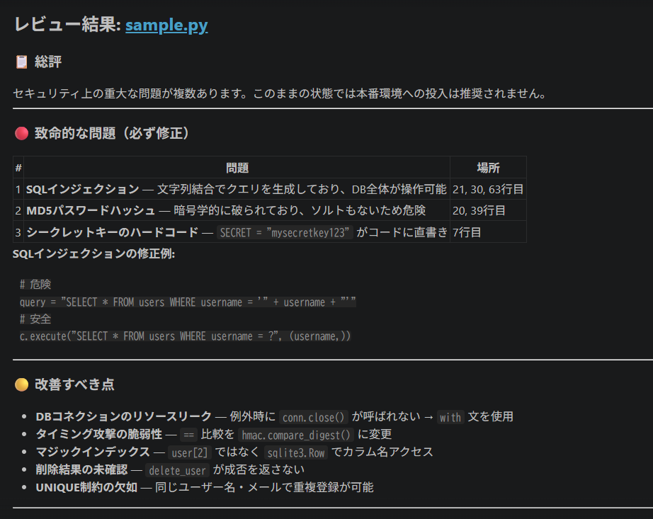
1 / 4code-reviewer
Python コードを自動解析し、SQLインジェクション・MD5ハッシュ・ ハードコードシークレットなど脆弱性を優先度付きで検出。 Before / After の修正コードをレポート形式で提示する。
致命的 3件 + 改善 5件を検出・修正コード提示
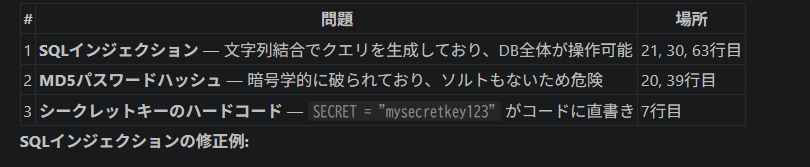
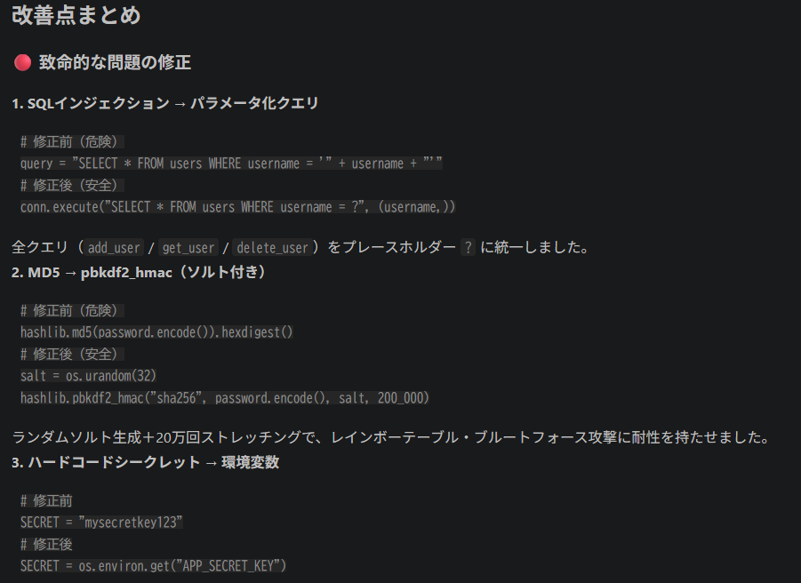
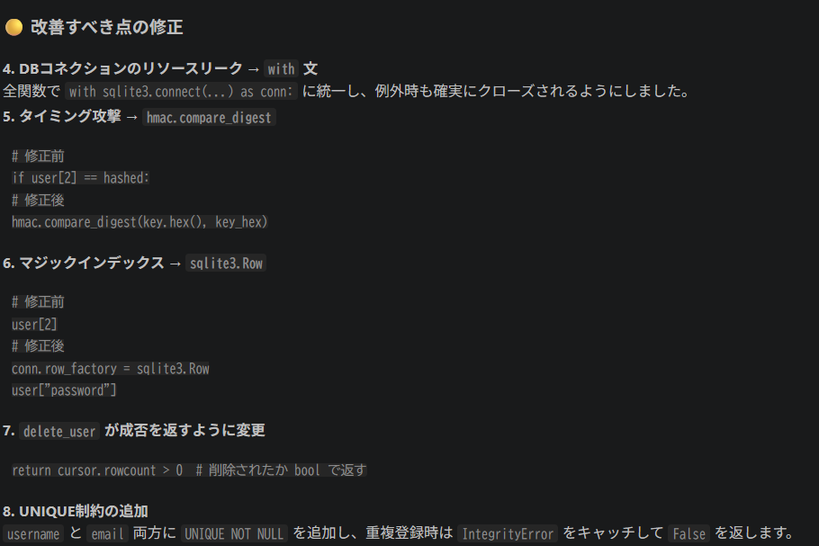
コードレビュー・要約・マルチエージェントワークフロー・ブラウザ自動化——
Claude Code を使い、2026年5〜6月に段階的に構築した実験ポートフォリオ。

1 / 4Python コードを自動解析し、SQLインジェクション・MD5ハッシュ・ ハードコードシークレットなど脆弱性を優先度付きで検出。 Before / After の修正コードをレポート形式で提示する。



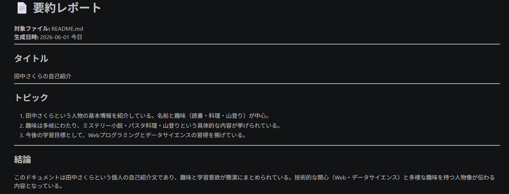
1 / 3ファイルをタイトル・トピック3つ・結論・改善提案3つの形式で自動要約。 文字数オプションで N±10% に自動調整。ファイル未存在時は 類似ファイルをサジェストするエラーハンドリングも実装。
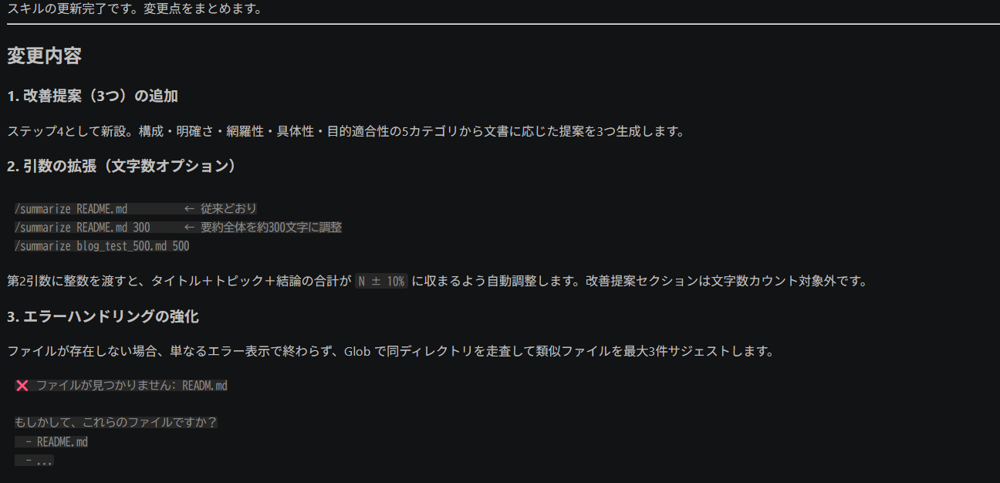
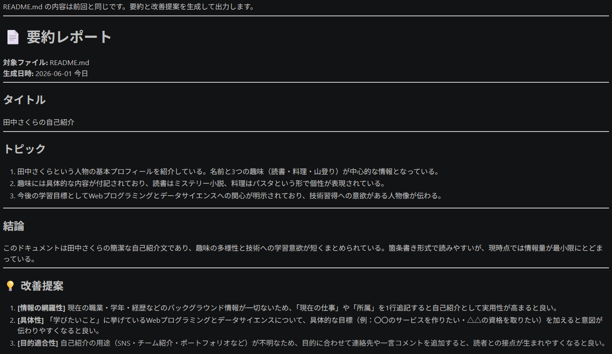
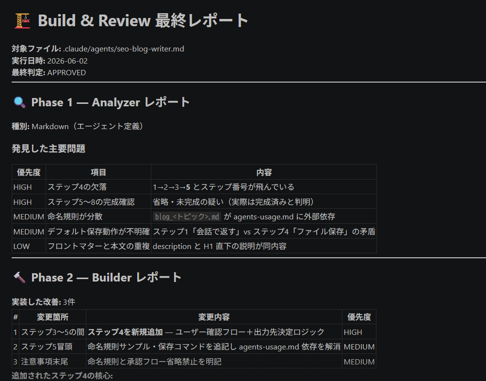
1 / 4Analyzer → Builder → Reviewer の3フェーズで自動改善するワークフロー。 目的明確性・構造整合性・情報網羅性・可読性・保守性の5軸で 品質スコアを定量評価し、改善前後の差分を出力する。
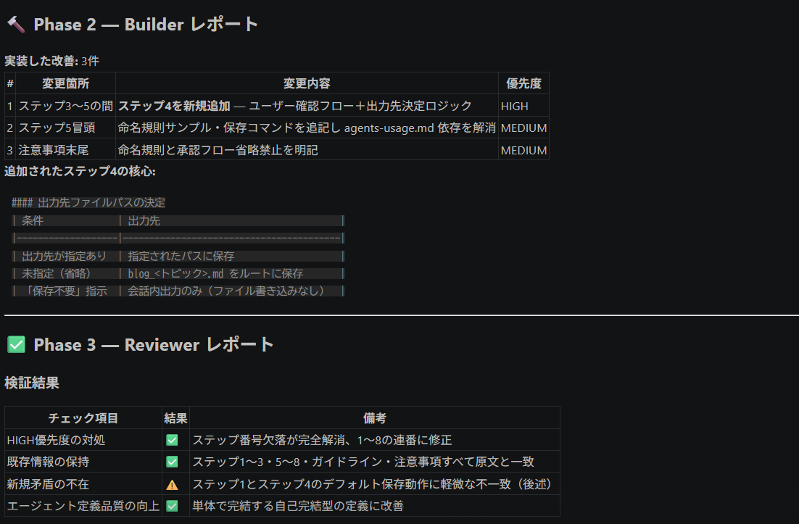
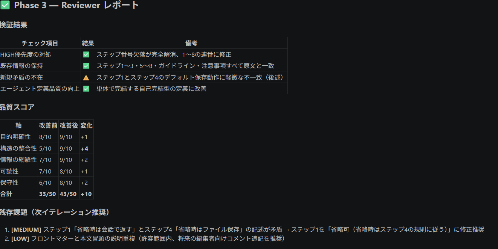
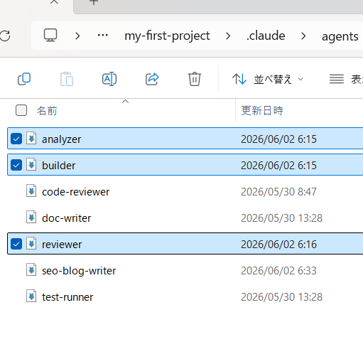
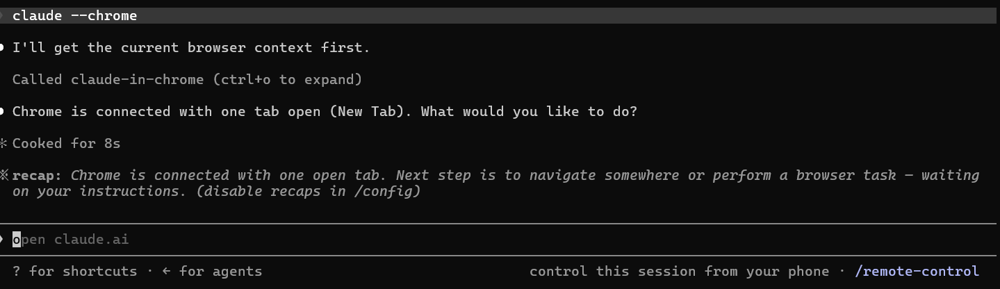
1 / 4claude-in-chrome MCP で Chrome に接続し、複数サイトを自動巡回。 Yahoo! ニュース・NHK・朝日新聞の3サイトのトップニュース見出しを 一括取得してリスト形式で整形出力するパイプラインを構築。
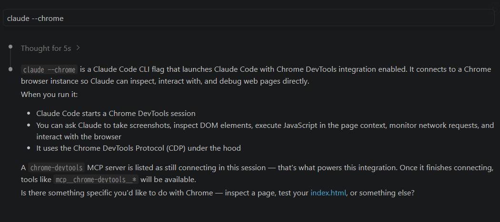
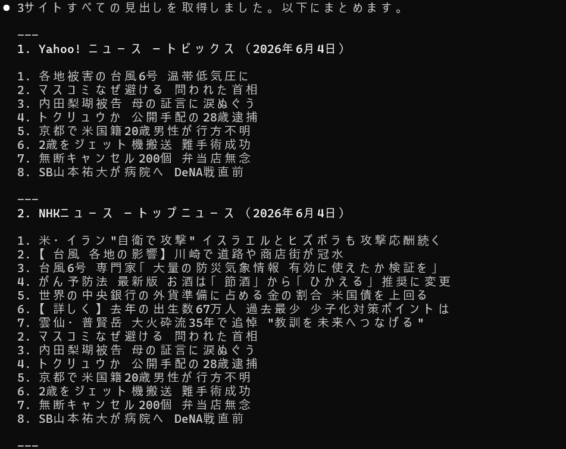
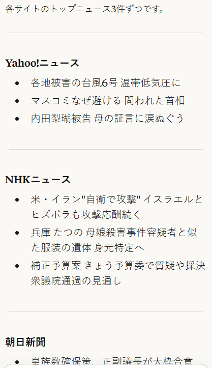
code-reviewer SubAgent を構築。sample.py の脆弱性（SQLi・MD5・ハードコードキー）を自動検出し、パラメータ化クエリ・pbkdf2_hmac・環境変数への修正コードを提示できるようになった。
基本的な要約に加え、改善提案3件・文字数オプション・ファイル未存在時のサジェスト機能を追加。/summarize コマンドが実用レベルに到達した。
Analyzer・Builder・Reviewer の3エージェントを連携させ、エージェント定義ファイル自体を自動改善するワークフローを実現。品質スコアを33/50から43/50に引き上げた。
claude-in-chrome MCP で Chrome に接続し、Yahoo!・NHK・朝日新聞の3サイトを自動巡回してトップニュースを一括取得するパイプラインを構築。ブラウザ操作の自動化が実用段階に入った。